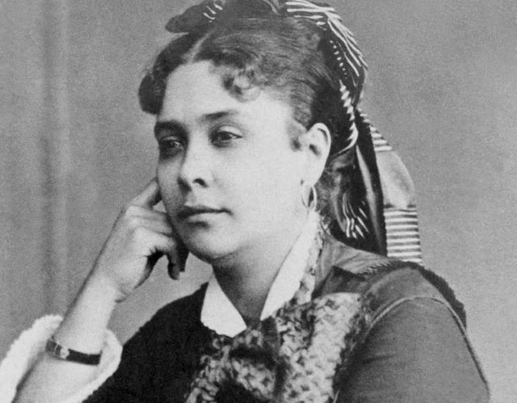

Quer um exemplo de uma Mulher que Fez História?
Chiquinha Gonzaga foi uma brasileira de vanguarda: compositora, pianista e maestrina. Autora da famosa marchinha de carnaval "Ô Abre Alas". Filha de um militar com uma mulher mestiça, neta de uma escrava, Chiquinha teve acesso à educação de qualidade e desde cedo se mostrou fascinada pelo universo da música. Conhecida pelo seu gênio forte, a jovem casou com um homem oito anos mais velho com quem teve três filhos. Como o marido não apoiava a sua vocação musical, Chiquinha pediu divórcio. Pouco tempo depois casou novamente e teve uma filha. O casamento também não deu certo, mas Chiquinha conseguiu afinal ter o destino que tanto queria: viveu da música, viajou pelo país, compôs e deu aulas de piano.
